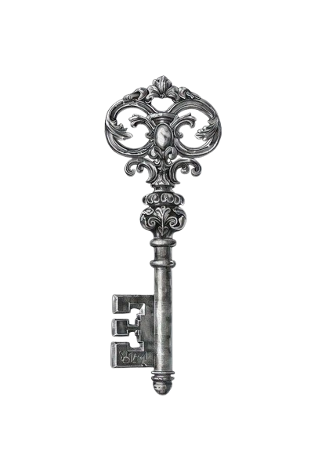

Ao coração que fez do meu destino um lugar de abrigo
Melissa,
Eu poderia falar da viagem… das luzes de Natal, das decorações gigantes, dos mais de um milhão e meio que a prefeitura gastou pra deixar tudo bonito. E tava mesmo. Mas, sendo sincero… nada daquilo foi o que mais ficou em mim. Porque enquanto todo mundo olhava pras luzes, pras cores, pras coisas brilhando… eu tava olhando pra você. E era diferente.
Não era só o momento. Era a sensação de estar ali, do teu lado, vivendo aquilo sabendo que um dia ia virar só memória. E mesmo assim… escolher sentir tudo. Cada segundo. Cada detalhe. Como se eu estivesse tentando guardar aquilo em algum lugar que não se perde com o tempo. Eu lembro das luzes refletindo no teu rosto… e por um segundo, tudo parecia em silêncio.
Como se o mundo tivesse diminuído só pra caber naquele momento. E eu pensei: “é isso.” Não o Natal. Não a cidade. Não o dinheiro gasto. Mas isso aqui. Estar com você… enquanto o resto acontece ao redor. Porque no fim, tudo aquilo vai apagar. As luzes vão sumir. As decorações vão embora. Mas aquele momento… eu vivi ele de verdade, com você.. Eu te amo.